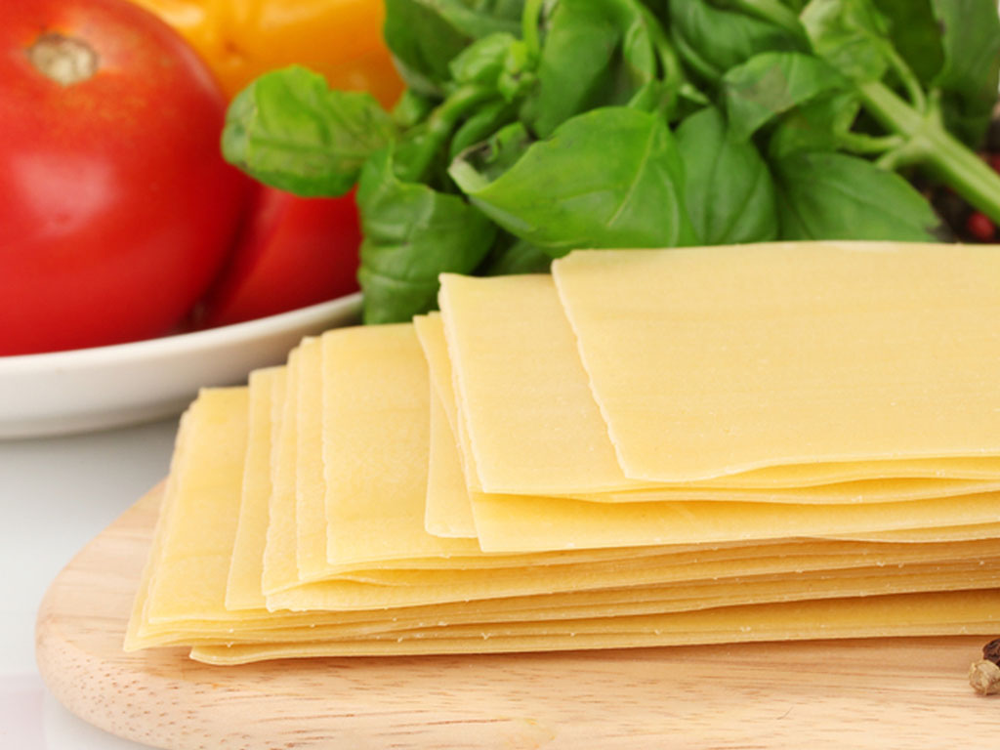

Pão Frânces
O Pão Frânces, tambem conhecido como marqueta ou pan de batalha na Bolivia, ou pan francês no sul do Chile ou ainda pan batido, é um tipo de pão feito de farinha, sal, água e fermento.
Valor: R$ 0.30 a unidade
Queijo Mussarela
A mozarela, muçarela ou Mussarela (em italiano, mozzarella) é uma variedade de queijo de massa filada com origem na comuna de Aversa, na provincia de Caserta, na região de Campânia, na Itália
Valor: R$ 20/kg
Bolo de cobertura de chocolate

Bolo de chocolate é um bolo simples ou confeitado, que leva chocolate derretido ou em pó, ou ainda cacau em pó em sua confecção. Os ingredientes mais comuns são o ovo, o leite, a manteiga ou substituto, açúcar e fermento.
Valor: R$ 6/kg